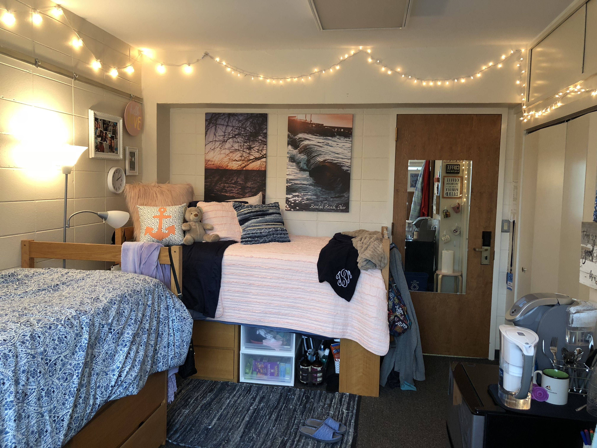

Wheaton has four campus residence halls available for undergraduate students. Freshman and Sophomore students are required to live in residence halls.
Fischer Hall houses five male floors and seven female floors of freshmen and sophomore students. Most rooms are configured as suites, with double or triple occupancy rooms adjoined by a common bathroom. Floors average around 50 students.
Smith-Traber Hall houses six male floors and five female floors of freshmen and sophomore students. Most rooms are configured as doubles and are situated around a floor lounge and a central bathroom. Floors average around 40 students.
McManis-Evans Hall The centrally located McManis-Evans Hall houses 288 sophomore, junior, and senior students in single, double, triple, and quad rooms.
Williston Hall is Wheaton's oldest residence hall, housing 61 sophomore students.
MENU
Campus Apartments
22
Campus Houses
32
Residence Halls
27
Undergraduate Off-Campus Housing
23
Contact for Campus Housing